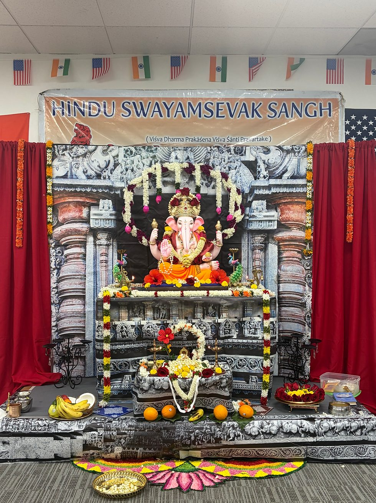
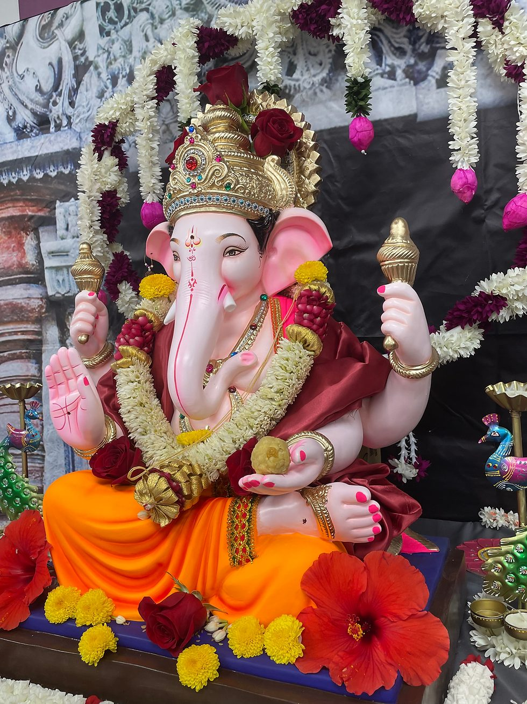

To begin with, as the word says, nothing is impossible. I feel the Swayamsevaks and Sevikas in HSS truly live up to it, and when it comes to yuvas, it is even more inspiring.
Everyone is a working professional in the Bay Area, with their own deadlines, family commitments and responsibilities. Everyone would still agree that it's possible to plan and execute a Ganesh Utsav in just two weeks.
But we did.
There was only one belief — it is definitely possible with all of us together.
When I joined Shaka, I always used to wonder how everyone was able to manage their time so well. They were working, taking care of their families, and still able to contribute their time and dedication to Shaka and society in the name of Seva. I am slowly understanding the essence of Shaka.
I am very much confident that anyone looking at us from outside might think our coordination is magical, especially when it comes to our recent Ganesh Utsav.
Swayamsevaks and Sevikas voluntarily came forward and took responsibility. One took Sampark responsibility, a couple of them coordinated and got the murti. Without even bothering about their car, they simply placed the Ganesh murti in the car as if the car was meant for Shaka work.
What I mean is, everyone worked selflessly. In a world full of blame and handoff games, as Swayamsevaks and Sevikas, we only take responsibility (daithwa).
We all decided to cook and get Prasad. With my minimum cooking skills, I was also able to cook and bring something, just with the interest to contribute. I got inspired because I had seen a few cooking so well.


A few volunteers showed up one day before the event and spent their entire evening until late at night preparing for it. Some brought their own decorative items and decorated them so beautifully. Their excitement was like they were doing an event at their own house.
Everyone had their own commitments on the day of the event, but everyone managed to finish them, showed up at the exact time and kicked off the event as planned.
A few took responsibility for the priest and conducted the Puja with complete dedication and devotion. Seeing them itself pushes us to become multi-talented.
In just two weeks, we were able to bring around 200 people to the event. The Bhajans were so divine, and even after all the tiredness, we were able to clean up the hall and return it the way it was provided to us.
The support from our senior Karyakartas was also really great. Some of them came all the way from Sacramento and Tracy to be part of the event and support the yuvas.
When I look back at these two weeks, I feel I understood something more about Seva and Sanghatan.
It is not about having enough time. It is about having the willingness to contribute.
It is not about asking who will do it. It is about taking the responsibility.
And when everyone comes together with that mindset, nothing really feels impossible.
Sanghatan mein Shakti hai! 🙏